Do you believe in a life where every pet has a cozy and safe home? We do! Therefore, we offer people to adopt a kitten from our shelter for free. Join us! Find a friend right now.
There are many things to think about when it comes to getting a cat or kitten. You need to consider your own lifestyle and home environment, and consider whether you can adapt both to keep your cat happy and healthy.
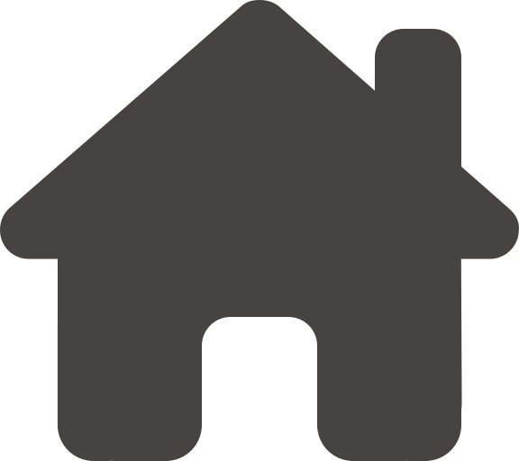
Time for a cat
A kitten can be a great addition to your home, but it will grow up, so getting a cat is a long-term commitment. Many people think that a cat is easier to keep than a dog, but cats also require a lot of attention and support.
Friendly home
The area in which the cat lives is an important component of its well-being. Allow him to explore new environments and learn to navigate the home at his own pace, but be sure to check the home for potential hazards.
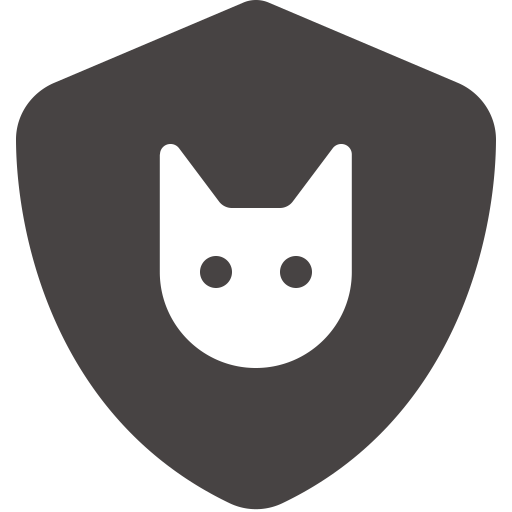
Care for a cat
There are many things that contribute to your cat's well-being, and proper provision from day one will ensure that they are healthy and adapt well to their new home. Therefore, proper cat care is important.
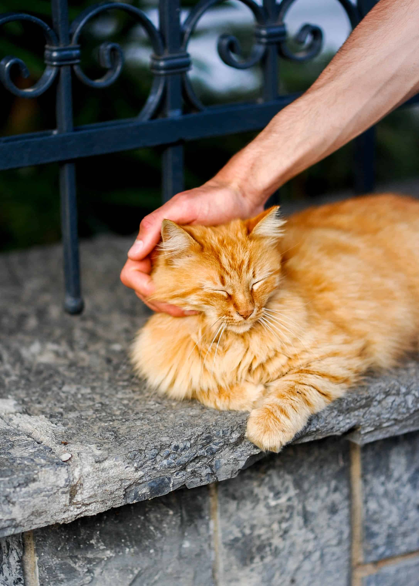
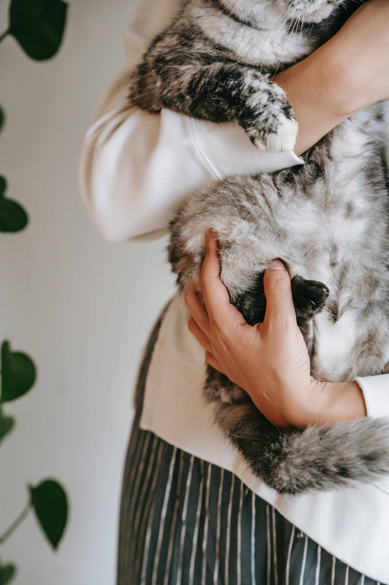
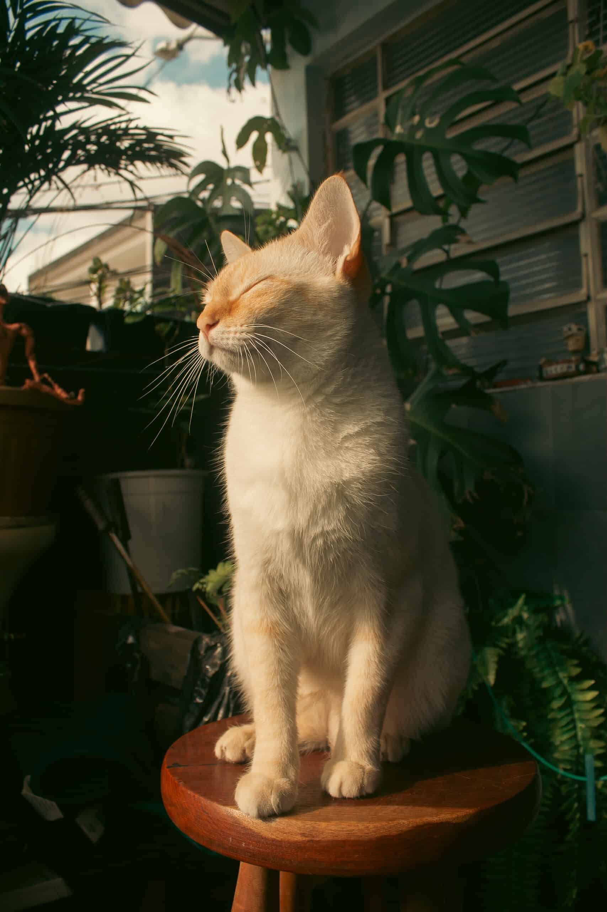
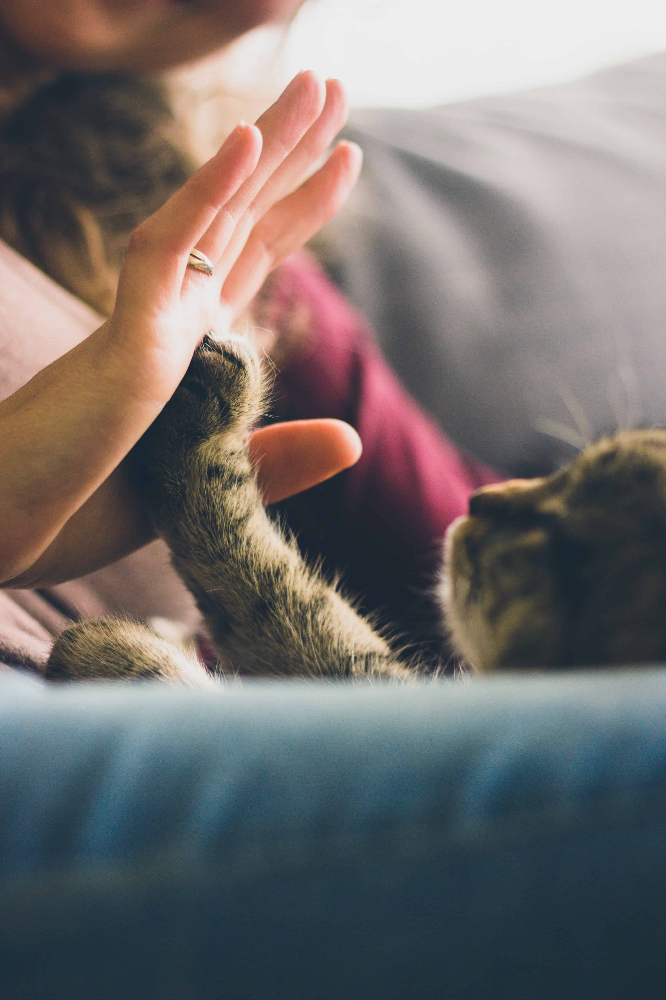
About us
Paws is a large shelter for homeless cats in the city of Kyiv, Ukraine.
The shelter started its work in 2015. During this time, we found a home for more than 900 cats. More than 1,200 animals were operated on and saved. Currently, about 1500 cats live in the shelter. We necessarily sterilize and vaccinate all animals.
Unfortunately, after the invasion of Russia on the territory of Ukraine in 2022, many people and animals were left without a home. Therefore, our shelter houses animals from different parts of Ukraine, including those taken from the occupied territories.
It is important for us to draw public attention to existing problems and implement effective projects. We want to create conditions for a comfortable coexistence of humans and animals.
Our cats
These kitties have been waiting for a new home for a long time. In the shelter, there will be friends for everyone - big, small, guards, companions, lazy and restless.
Sasha, 1 mounth
Sasha is a very fragile and careful girl. Unfortunately, she was found and rescued 10 days later than her brothers, who were already eating and socializing as hard as they could. Therefore, she still needs understanding, time and care.
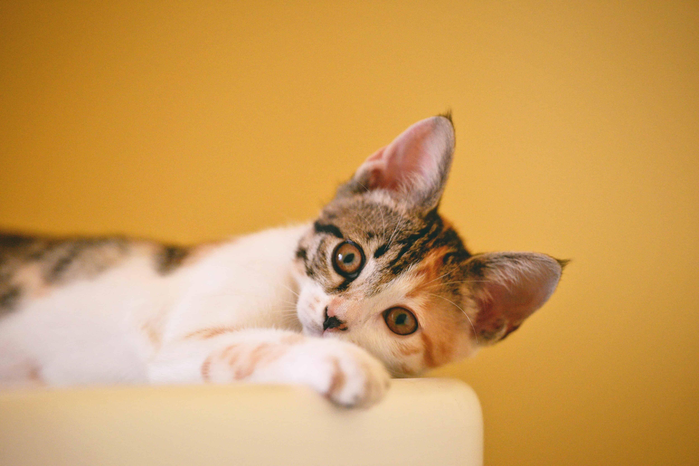
Lucky, 3 mounths
An active and polite guy. Likes to explore everything around. The military rescued him from shelling, and now he is waiting for his family in a shelter.
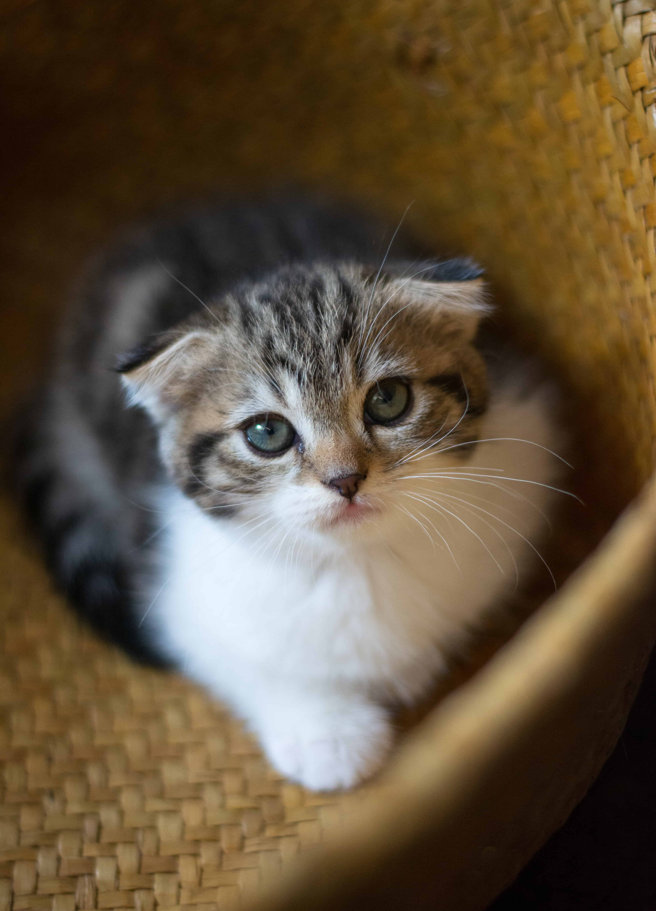
Freya, 4 mounths
Freya is very gentle and affectionate beauty. She and her sister were rescued by the military. Her sister has already gone home, and Freya is waiting. Keep an eye on this beauty, she deserves to be a happy pet.
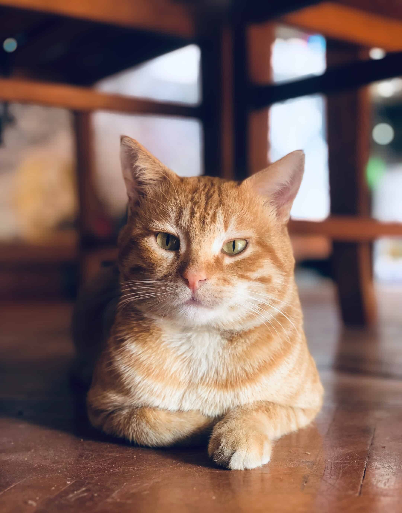
Lea, 1 year
Beautiful Lea is contact and tame, loves communication both with humans and with other cats. So if you are looking for company for your cat or cat, Lea will be perfect.
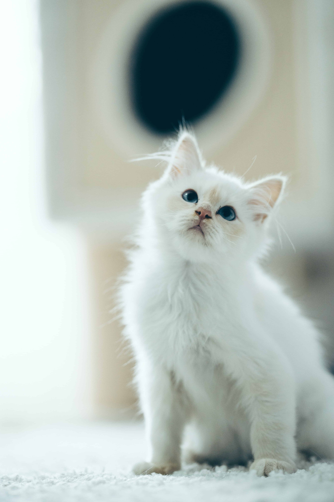
Snowflake, 2 mounths
Snowflake looks so cold, but she is so gentle and cuddly inside. This girl just seems clumsy and independent. Life simply did not pamper her. Take her home as soon as possible
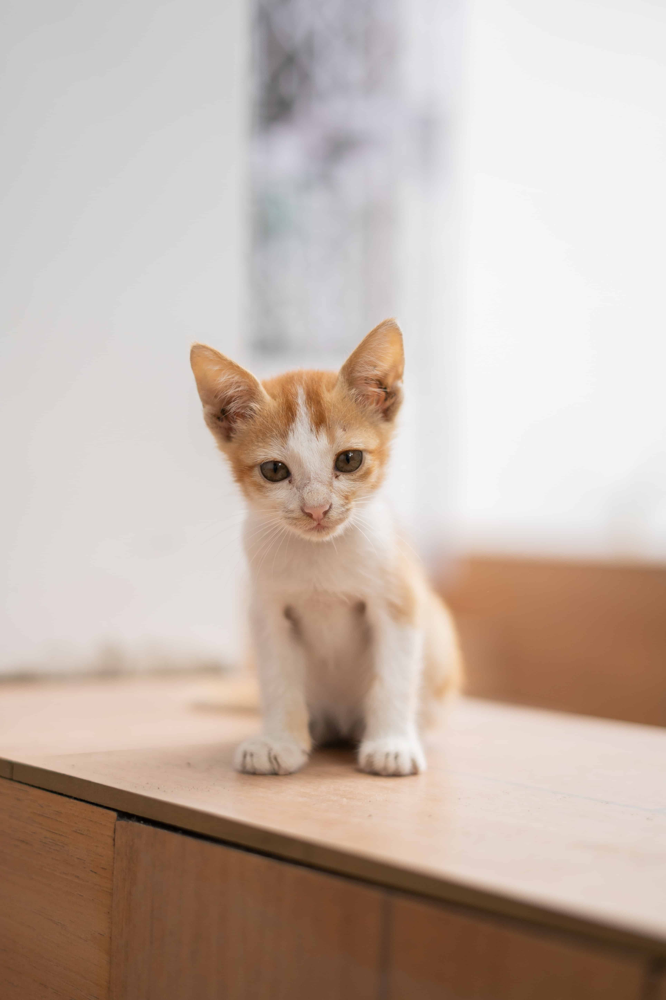
Ivan, 2 mounths
Ivan recently underwent an operation. He is incredibly tame, playful and active. And also charming. Such a baby will be the best friend for the whole family.
Happy stories
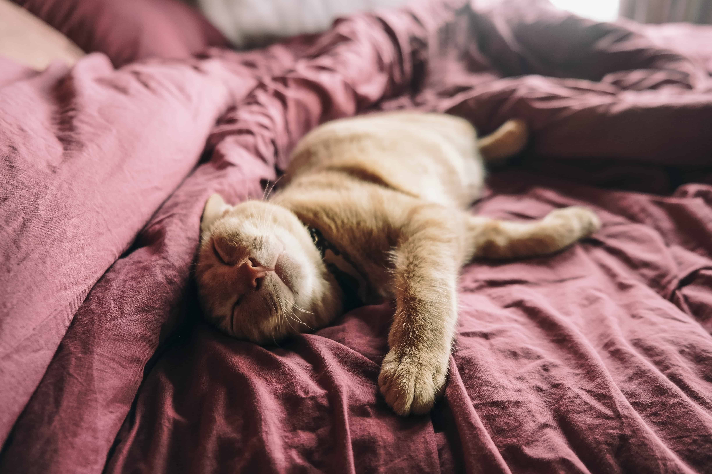
Anna and David with Apricot:
Little Apricot was found with his stomach ripped open. Fortunately, the doctors managed to save his life, but the cat was in the hospital for a long time. We were very worried about him and tried to help him as much as possible. He has been a part of our family for 5 months now. We are very glad that everything turned out well!
Joerg with Noodle:
Noodle was rescued from the occupied territory by a volunteer. Unfortunately, her brothers did not survive. She had to go through a lot. When we first met, she didn't have half her fur because she was rescued from a fire. But nevertheless it was love at first sight. She immediately purred in my arms. I`m very happy, that she is part of my little family.
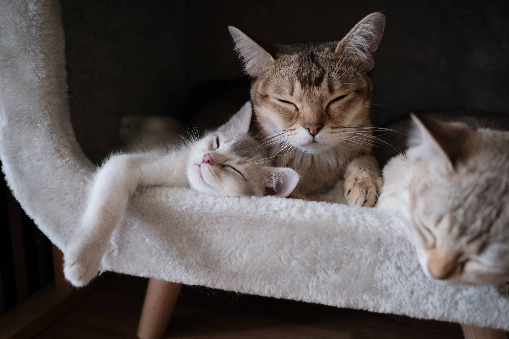
Sofia and Daniel with Lily, Jasmine and Nut:
Lily, Jasmine and Nut are two sisters and a brother. At first we wanted to take only Lily, but she missed her cat family very much. So we decided to take them all. There are now five children in our big house: two of ours and three kittens. And you know what? It was the best decision of our entire life.
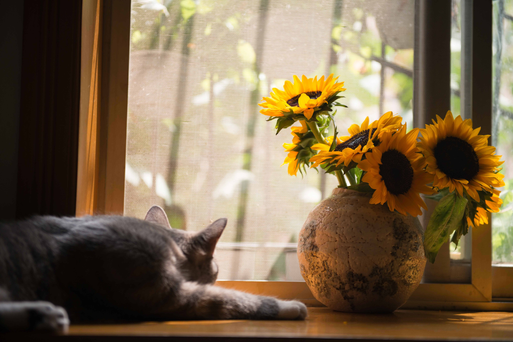
Alex and Elizabeth with Pearl
I have always been indifferent to cats, but my daughter Elizabeth has been begging me for a cat. On her birthday, I decided to surprise her. In the shelter, I asked them to show me Pearl, she was lying away from everyone. But as soon as she was in my arms, she did not want to come down. For the first time in my life, I was impressed by a cat. My daughter was overjoyed. Unbelievable, but now besides Elizabeth, Pearl is another treasure of my heart.
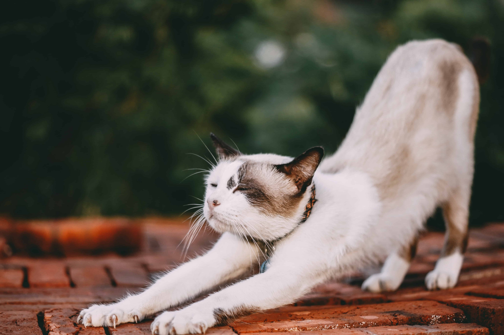
Margaret with Coconut
I had a dream to have a cat. But my active lifestyle did not allow it. Once I was volunteering at a shelter and saw a coconut. He looked at me so much that I could not resist. As it turned out, the coconut likes to travel a lot and always asks to go outside with me. I was shocked that cats could be so adventurous. Now we are best friends and spend a lot of time together.
What's Next?
1
Get more information about the cat
It is necessary to learn more about your future pet, because each animal is unique. So learn more about:
Character and habits of the cat.
His medical history.
Does he need special care?
In our shelter, you will receive a detailed description of the cat. That way, you can decide whether it suits your personality and budget.
2
Submit an application
Ready to adopt a kitten? Fill out a simple application for this. We have to make sure that the cat is in good hands. The most important questions are:
Do you have other pets?
Do you have small children?
Do you live in a private house or rent an apartment?
3
Prepare your home for a cat
It is important to fully prepare for the appearance of a kitten in the house. Make sure you create a safe environment for the kitten in your home and set up a room with everything you need, including a bed, food and water bowls, a litter tray, and toys.
You will also need a basket or cage to carry the kitten and some food that the previous owner fed it. It's also a good idea to find a vet you trust and make an appointment a few days after you pick up the kitten.
4
Bring your cat home!
Congratulations, you now have a furry baby! Remember that we are responsible forthose we have tamed.
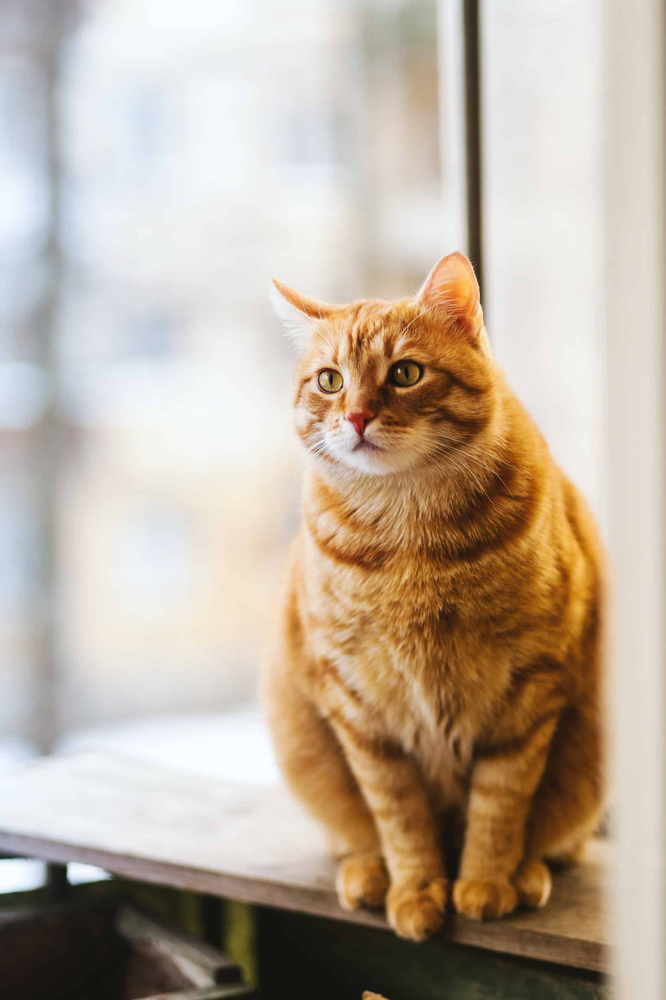
Help to our shelter
The shelter exists thanks to the donations of patrons and private benefactors. That is why we are always grateful for any charitable help.
Volunteer help
Do you want to help us personally? Feed the animals, clean the area or pick up medicine from the post office. Our administration will provide information on current requests.
Things And clothes
We always need animal feed, veterinary medicines, building materials for the construction and repair of old enclosures. Blankets, bedding and towels, jackets for employees are also needed.
financial support
Our shelter runs almost entirely on donations. Donations are fully spent on keeping and caring for dogs and cats, including providing a full cycle of treatment for seriously ill animals.
We are using cookies to ensure that we give you the best experience. By continuing to use this site, you agree to our policy. To read more about how we use cookies read our Privacy Policy